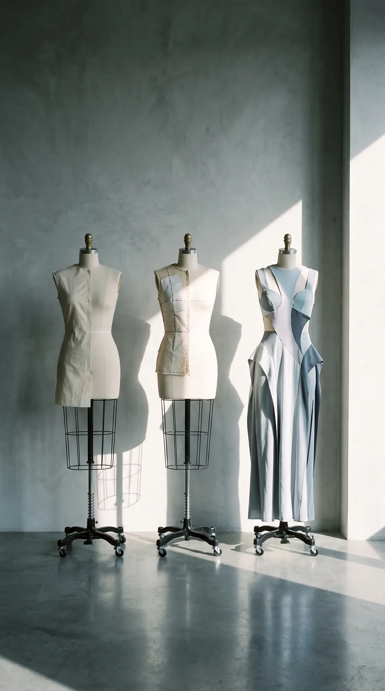

The process
Toile. Fitting. Finished.
The Process
Five steps, and the second one is the one that decides everything.
-
01
The Conversation
We talk about the occasion, the date and the cloth, and I take your measurements.
-
02
The Toile
I cut a full version of the garment in plain cotton, to be marked and taken apart until the shape is right.
-
03
The Fittings
You come back three times for a couture piece, and more often for a wedding dress, and each time the garment moves closer to your body.
-
04
The Finishing
The last work is the slow work: hems, closures, linings, everything that is only noticed when it is wrong.
-
05
The Handover
You collect the finished piece at the atelier, and try it on one last time before it leaves.
From the first conversation to the finished piece takes one to six months, depending on the model, the design and the cloth.
What a piece costs depends on what you ask for and how difficult it is to make. I would rather tell you properly, once I know what we are making.
That is the whole of it. Step one is a conversation.
By appointment only · Currently Amsterdam · Online meetings welcome